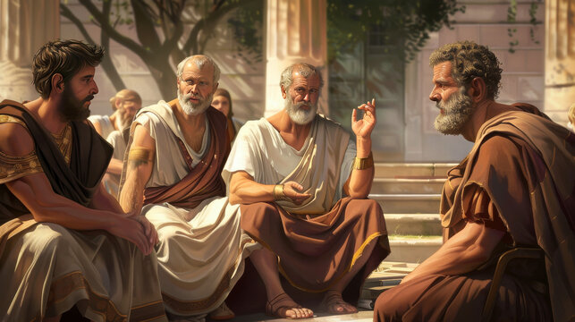
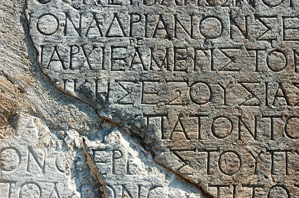

Unlock the Wisdom of the Ancients
Explore timeless teachings from the greatest minds of Greek philosophy.
Start LearningWelcome to Greek Philosophy
Explore ancient wisdom that shaped science, ethics, and politics.
What is Greek Philosophy?
Greek philosophy focuses on reason, inquiry, and the pursuit of knowledge about the universe, human nature, and morality.
Key Concepts in Greek Philosophy
- Ethics — Moral principles and virtuous living.
- Logic — Rational thought and argumentation.
- Metaphysics — Nature of reality and being.
- Epistemology — Theory of knowledge.
- Politics — Justice and governance.
- Aesthetics — Philosophy of beauty and art.
Why Study Greek Philosophy?
It provides insight into timeless questions and fosters critical thinking.